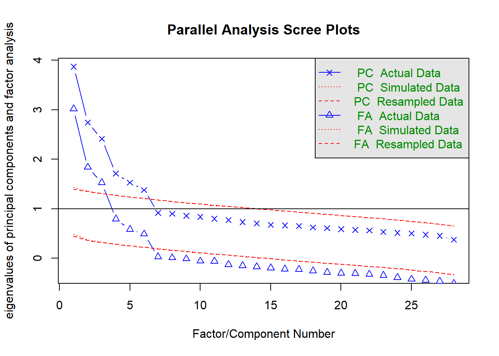
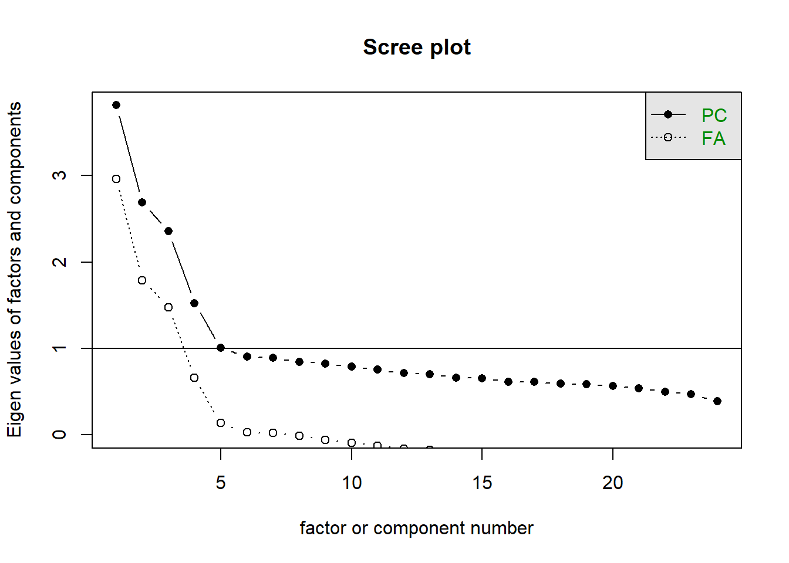
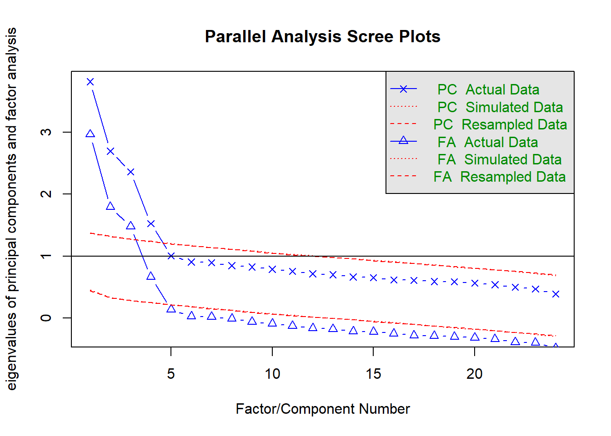

| variable | wording |
|---|---|
| q1 | I've been turning to work or other activities to take my mind off things. |
| q2 | I've been concentrating my efforts on doing something about the situation I'm in. |
| q3 | I've been saying to myself "this isn't real.". |
| q4 | I've been using alcohol or other drugs to make myself feel better. |
| q5 | I've been getting emotional support from others. |
| q6 | I've been giving up trying to deal with it. |
| q7 | I've been taking action to try to make the situation better. |
| q8 | I've been refusing to believe that it has happened. |
| q9 | I've been saying things to let my unpleasant feelings escape. |
| q10 | I've been getting help and advice from other people. |
| q11 | I've been using alcohol or other drugs to help me get through it. |
| q12 | I've been trying to see it in a different light, to make it seem more positive. |
| q13 | I've been criticizing myself. |
| q14 | I've been trying to come up with a strategy about what to do. |
| q15 | I've been getting comfort and understanding from someone. |
| q16 | I've been giving up the attempt to cope. |
| q17 | I've been looking for something good in what is happening. |
| q18 | I've been making jokes about it. |
| q19 | I've been doing something to think about it less, such as going to movies, watching TV, reading, daydreaming, sleeping, or shopping. |
| q20 | I've been accepting the reality of the fact that it has happened. |
| q21 | I've been expressing my negative feelings. |
| q22 | I've been trying to find comfort in my religion or spiritual beliefs. |
| q23 | I've been trying to get advice or help from other people about what to do. |
| q24 | I've been learning to live with it. |
| q25 | I've been thinking hard about what steps to take. |
| q26 | I've been blaming myself for things that happened. |
| q27 | I've been praying or meditating. |
| q28 | I've been making fun of the situation. |
EFA
Get set up
- Create a new .Rmd file for this week’s exercises.
- Save it somewhere you can find it again.
- Give it a clear name (for example,
dapr3_lab08.Rmd). - In the first code chunk, load the packages you’ll need this week:
tidyversepsych
copingstrats.csv
These data come from the development of a short measure of people’s “coping strategies”.
A sample of 620 people filled in a questionnaire that included 28 self-report items assessing the different ways individuals respond to stress in their daily lives. Participants rated each statement on a 5-point Likert scale ranging from 1 (“I haven’t been doing this at all”) to 5 (“I’ve been doing this a lot”), indicating how frequently they used each specific coping response when facing stressful events.
Study aim: Explore the underlying structure of the 28-item pool and (if necessary) refine the questionnaire into a well-defined measure of distinct coping strategies.
Item Wordings
Question 1
Read in the data and check the suitability of the items for EFA.
Things to look at: correlation matrix, bartlett’s test, KMO
🗂️ See the Check Suitability for Factor Analysis flash card.
Solution 1.
This is too big to look at sensibly as a set of numbers..
better as an image:
Looks like we have some non-zero correlations!
Bartlett test of homogeneity of variances
data: copeitems
Bartlett's K-squared = 205, df = 27, p-value <2e-16And KMO, along with individual item KMOs, all seem okay.
Kaiser-Meyer-Olkin factor adequacy
Call: KMO(r = copeitems)
Overall MSA = 0.79
MSA for each item =
q1 q2 q3 q4 q5 q6 q7 q8 q9 q10 q11 q12 q13 q14 q15 q16
0.79 0.78 0.83 0.60 0.78 0.80 0.78 0.82 0.85 0.82 0.63 0.74 0.81 0.79 0.83 0.84
q17 q18 q19 q20 q21 q22 q23 q24 q25 q26 q27 q28
0.86 0.82 0.81 0.76 0.86 0.62 0.86 0.84 0.85 0.79 0.62 0.74
Question 2
Let’s decide what to put in these bits of our factor models:
fa(..........., cor = ???, rotate = ???, fm = ???)To help us figure it out, refer back to the item wordings and the description of the study, and think through the questions below:
- on what scale were the items measured? How many levels are there?
- do the distributions of the items look roughly normally distributed?
- if there is just one dimension to this measure (i.e., 1 factor), then what would it mean to be high on that factor?
- just looking at wordings, are there possibly different groupings of items?
- if there are groups of items for which responses are being driven by separate latent factors, what would it mean to be low/high on those factors?
- Would we expect a person’s standing on one of these factors to be similar/opposing/unrelated to their standing on the other factor(s)?
Hints
- If we have enough (5+ is often “enough”) levels to our measurement scale, we can keep
cor = "cor".
- If we are worried about normality, we can use
fm = "pa", otherwise we can usefa = "minres"or (with a large sample size, which we do have here)fm = "ml" - Do we want to constrain any latent factors to be orthogonal to one another? If not,
rotate = "oblimin"is a good shout.
🗂️ See also the Decide on Rotation and Factor Extraction Methods flash card.
Solution 2. what type of correlation?
Every item has 5 response options, and things look more or less normal (hard to see with Likert data, but we’re not too skewed with lots of responses of 1s or 5s)
fa(..........., cor = "cor", rotate = ???, fm = ???)what factor extraction method?
we have a fairly large sample size here (620), and everything looks fairly normally distributed. I think “ml” is a safe bet here. We probably won’t get very different results depending on our choice in this situation, so any are probably fine.
fa(..........., cor = "cor", rotate = ???, fm = "ml")what rotation?
- We’re trying to measure “coping strategies”. There are lots of possible links between questions I can see - some of the questions seem to ask about social related strategies (q5, q10), some seem to be distraction-focussed (q1, q19). Some seem like bad strategies (drugs, denial, self criticism), and some seem like better ones (planning, social support etc).
- if it is a unidimensional scale, what would that represent? It will depend on the loadings (e.g., if loadings are positive for social items and negative for drugs/denial etc., then I suppose being higher indicates ’more frequently doing better coping strategies). But if all the loadings are positive, it would just represent “engaging more with coping strategies (of any sort)”
- If the measure is multi-dimensional (i.e., if there is more than just one latent factor that explains peoples’ responses to these questions), then would we expect those dimensions to be related? Probably! E.g., we would expect that someone who frequently uses the ‘good’ coping strategies will be less often using the ‘bad’ ones?
- And also, why would we ever want to constrain any dimensions to be orthogonal? Very occasionally, we might TODO, but not here
fa(..........., cor = "cor", rotate = "oblimin", fm = "ml")
Question 3
Define a range for the number of factors that we will extract.
🗂️ See the How to: Decide on the Number of Components/Factors flash card.
Solution 3.
| method | suggestion |
|---|---|
| scree plot | maybe 3? or maybe 6? |
| parallel analysis | 6 |
| MAP | 3 |
Let’s examine from 3 to 6 factors.

Parallel analysis suggests that the number of factors = 6 and the number of components = 6
Very Simple Structure
Call: vss(x = x, n = n, rotate = rotate, diagonal = diagonal, fm = fm,
n.obs = n.obs, plot = plot, title = title, use = use, cor = cor)
VSS complexity 1 achieves a maximimum of 0.54 with 3 factors
VSS complexity 2 achieves a maximimum of 0.66 with 8 factors
The Velicer MAP achieves a minimum of 0.01 with 3 factors
BIC achieves a minimum of -1148 with 6 factors
Sample Size adjusted BIC achieves a minimum of -442 with 7 factors
Statistics by number of factors
vss1 vss2 map dof chisq prob sqresid fit RMSEA BIC SABIC complex
1 0.31 0.00 0.017 350 2244 4.1e-273 31 0.31 0.093 -6 1105 1.0
2 0.38 0.47 0.014 323 1577 5.8e-164 24 0.47 0.079 -499 526 1.4
3 0.48 0.58 0.010 297 953 7.0e-70 19 0.59 0.060 -956 -13 1.4
4 0.48 0.60 0.011 272 706 2.9e-40 16 0.64 0.051 -1043 -180 1.5
5 0.50 0.63 0.012 248 479 7.6e-17 14 0.69 0.039 -1116 -328 1.6
6 0.54 0.65 0.013 225 299 6.8e-04 12 0.73 0.023 -1148 -433 1.5
7 0.52 0.66 0.015 203 219 2.1e-01 12 0.74 0.011 -1086 -442 1.6
8 0.50 0.66 0.017 182 177 5.9e-01 11 0.75 0.000 -993 -415 1.7
eChisq SRMR eCRMS eBIC
1 5385 0.107 0.111 3135
2 3139 0.082 0.089 1062
3 1461 0.056 0.063 -448
4 947 0.045 0.053 -801
5 542 0.034 0.042 -1053
6 255 0.023 0.030 -1192
7 188 0.020 0.027 -1117
8 146 0.018 0.025 -1024
Question 4
For every number in your range, fit a factor model.
🗂️ See the Fitting and Comparing EFA solutions flash card.
Solution 4.
copefa3 <- fa(copeitems, nfactors = 3, rotate = "oblimin", fm = "ml", cor = "cor")
copefa4 <- fa(copeitems, nfactors = 4, rotate = "oblimin", fm = "ml", cor = "cor")
copefa5 <- fa(copeitems, nfactors = 5, rotate = "oblimin", fm = "ml", cor = "cor")
copefa6 <- fa(copeitems, nfactors = 6, rotate = "oblimin", fm = "ml", cor = "cor")
Question 5
V - variance
How much of the total variance in the coping strategy items is explained by each factor solution?
Solution 5.
| solution | variance explained |
|---|---|
| 3 factor | 0.24 |
| 4 factor | 0.27 |
| 5 factor | 0.31 |
| 6 factor | 0.34 |
Question 6
I - identification
For each solution, do all factors have 3+ items for which the factor is the primary loading?
Solution 6.
| solution | all factors identified |
|---|---|
| 3 factor | yes |
| 4 factor | yes |
| 5 factor | one factor (ML4) has only 2 items |
| 6 factor | two factors (ML4, ML6) only have 2 items |
Question 7
S - salience, C - complexity, H - heywood cases
Look at the patterns of loadings for each solution. Are there any items that:
- do not load on to any factor at a salient level?
- have high complexity or cross loadings across multiple factors?
- have impossible values (factor loadings or communalities > 1)?
Solution 7.
Full output
3 factor
Factor Analysis using method = ml
Call: fa(r = copeitems, nfactors = 3, rotate = "oblimin", fm = "ml",
cor = "cor")
Standardized loadings (pattern matrix) based upon correlation matrix
ML1 ML2 ML3 h2 u2 com
q1 -0.14 0.48 0.22 0.284 0.72 1.6
q2 0.38 0.00 -0.07 0.144 0.86 1.1
q3 0.17 0.05 0.39 0.205 0.80 1.4
q4 -0.12 -0.02 0.14 0.030 0.97 2.0
q5 0.53 -0.04 0.03 0.277 0.72 1.0
q6 -0.10 0.05 0.61 0.373 0.63 1.1
q7 0.42 0.21 -0.11 0.244 0.76 1.6
q8 0.09 -0.07 0.49 0.258 0.74 1.1
q9 0.22 0.04 0.41 0.252 0.75 1.6
q10 0.65 -0.11 0.06 0.429 0.57 1.1
q11 -0.07 -0.07 0.19 0.044 0.96 1.6
q12 0.05 0.63 -0.02 0.407 0.59 1.0
q13 0.00 0.12 0.54 0.319 0.68 1.1
q14 0.35 0.22 0.00 0.191 0.81 1.7
q15 0.57 -0.03 0.02 0.327 0.67 1.0
q16 0.02 -0.02 0.59 0.350 0.65 1.0
q17 0.23 0.43 -0.13 0.268 0.73 1.7
q18 -0.03 0.52 0.09 0.282 0.72 1.1
q19 -0.06 0.46 0.13 0.229 0.77 1.2
q20 -0.01 0.33 -0.22 0.150 0.85 1.8
q21 0.37 0.13 0.18 0.218 0.78 1.7
q22 0.20 0.00 -0.03 0.039 0.96 1.1
q23 0.51 -0.09 0.12 0.281 0.72 1.2
q24 0.16 0.42 -0.11 0.220 0.78 1.4
q25 0.48 0.27 -0.06 0.326 0.67 1.6
q26 0.07 -0.06 0.54 0.302 0.70 1.1
q27 0.13 0.11 0.04 0.035 0.97 2.1
q28 -0.07 0.64 0.01 0.406 0.59 1.0
ML1 ML2 ML3
SS loadings 2.43 2.28 2.17
Proportion Var 0.09 0.08 0.08
Cumulative Var 0.09 0.17 0.25
Proportion Explained 0.35 0.33 0.32
Cumulative Proportion 0.35 0.68 1.00
With factor correlations of
ML1 ML2 ML3
ML1 1.00 0.13 0.13
ML2 0.13 1.00 0.06
ML3 0.13 0.06 1.00
Mean item complexity = 1.4
Test of the hypothesis that 3 factors are sufficient.
df null model = 378 with the objective function = 5.44 with Chi Square = 3314
df of the model are 297 and the objective function was 1.57
The root mean square of the residuals (RMSR) is 0.06
The df corrected root mean square of the residuals is 0.06
The harmonic n.obs is 620 with the empirical chi square 1472 with prob < 8.8e-155
The total n.obs was 620 with Likelihood Chi Square = 950 with prob < 2e-69
Tucker Lewis Index of factoring reliability = 0.716
RMSEA index = 0.06 and the 90 % confidence intervals are 0.055 0.064
BIC = -959
Fit based upon off diagonal values = 0.86
Measures of factor score adequacy
ML1 ML2 ML3
Correlation of (regression) scores with factors 0.88 0.88 0.87
Multiple R square of scores with factors 0.77 0.77 0.76
Minimum correlation of possible factor scores 0.55 0.54 0.514 factor
Factor Analysis using method = ml
Call: fa(r = copeitems, nfactors = 4, rotate = "oblimin", fm = "ml",
cor = "cor")
Standardized loadings (pattern matrix) based upon correlation matrix
ML3 ML2 ML1 ML4 h2 u2 com
q1 0.18 0.52 -0.04 -0.11 0.306 0.69 1.3
q2 -0.03 -0.08 0.19 0.34 0.177 0.82 1.7
q3 0.47 -0.05 -0.05 0.33 0.322 0.68 1.8
q4 0.11 0.04 0.02 -0.21 0.052 0.95 1.6
q5 -0.03 0.01 0.65 -0.07 0.401 0.60 1.0
q6 0.60 0.08 -0.05 -0.09 0.367 0.63 1.1
q7 -0.05 0.06 0.08 0.59 0.397 0.60 1.1
q8 0.55 -0.12 -0.05 0.19 0.336 0.66 1.4
q9 0.39 0.07 0.27 -0.03 0.261 0.74 1.9
q10 0.03 -0.11 0.62 0.13 0.446 0.55 1.2
q11 0.17 -0.02 0.05 -0.19 0.064 0.94 2.1
q12 -0.01 0.57 -0.05 0.21 0.403 0.60 1.3
q13 0.52 0.16 0.07 -0.07 0.315 0.69 1.3
q14 0.06 0.09 0.07 0.49 0.292 0.71 1.1
q15 -0.02 -0.01 0.62 0.03 0.390 0.61 1.0
q16 0.58 0.01 0.07 -0.08 0.348 0.65 1.1
q17 -0.10 0.34 0.04 0.34 0.287 0.71 2.2
q18 0.09 0.48 -0.09 0.14 0.283 0.72 1.3
q19 0.10 0.48 -0.01 -0.04 0.241 0.76 1.1
q20 -0.28 0.39 0.11 -0.13 0.220 0.78 2.3
q21 0.14 0.18 0.45 -0.04 0.270 0.73 1.5
q22 0.01 -0.08 0.03 0.25 0.070 0.93 1.2
q23 0.10 -0.09 0.47 0.10 0.283 0.72 1.3
q24 -0.13 0.41 0.15 0.09 0.231 0.77 1.6
q25 -0.03 0.18 0.27 0.40 0.347 0.65 2.2
q26 0.52 -0.02 0.11 -0.06 0.297 0.70 1.1
q27 0.08 0.02 -0.05 0.27 0.080 0.92 1.3
q28 -0.01 0.66 -0.02 -0.02 0.430 0.57 1.0
ML3 ML2 ML1 ML4
SS loadings 2.18 2.15 1.98 1.61
Proportion Var 0.08 0.08 0.07 0.06
Cumulative Var 0.08 0.15 0.23 0.28
Proportion Explained 0.28 0.27 0.25 0.20
Cumulative Proportion 0.28 0.55 0.80 1.00
With factor correlations of
ML3 ML2 ML1 ML4
ML3 1.00 0.06 0.14 0.05
ML2 0.06 1.00 0.08 0.16
ML1 0.14 0.08 1.00 0.28
ML4 0.05 0.16 0.28 1.00
Mean item complexity = 1.4
Test of the hypothesis that 4 factors are sufficient.
df null model = 378 with the objective function = 5.44 with Chi Square = 3314
df of the model are 272 and the objective function was 1.15
The root mean square of the residuals (RMSR) is 0.05
The df corrected root mean square of the residuals is 0.05
The harmonic n.obs is 620 with the empirical chi square 973 with prob < 1.5e-79
The total n.obs was 620 with Likelihood Chi Square = 695 with prob < 7.3e-39
Tucker Lewis Index of factoring reliability = 0.799
RMSEA index = 0.05 and the 90 % confidence intervals are 0.046 0.055
BIC = -1054
Fit based upon off diagonal values = 0.91
Measures of factor score adequacy
ML3 ML2 ML1 ML4
Correlation of (regression) scores with factors 0.87 0.87 0.87 0.83
Multiple R square of scores with factors 0.76 0.76 0.75 0.69
Minimum correlation of possible factor scores 0.52 0.52 0.51 0.385 factor
Factor Analysis using method = ml
Call: fa(r = copeitems, nfactors = 5, rotate = "oblimin", fm = "ml",
cor = "cor")
Standardized loadings (pattern matrix) based upon correlation matrix
ML3 ML2 ML1 ML5 ML4 h2 u2 com
q1 0.52 0.22 -0.03 -0.18 -0.10 0.346 0.65 1.7
q2 -0.05 -0.10 0.19 0.44 0.20 0.291 0.71 2.0
q3 -0.02 0.44 -0.04 0.37 0.03 0.332 0.67 2.0
q4 0.06 -0.01 -0.01 -0.02 0.67 0.454 0.55 1.0
q5 0.01 -0.03 0.65 -0.07 0.05 0.394 0.61 1.0
q6 0.06 0.61 -0.04 -0.08 -0.01 0.378 0.62 1.1
q7 0.12 -0.06 0.12 0.54 -0.09 0.380 0.62 1.3
q8 -0.11 0.51 -0.05 0.27 0.12 0.362 0.64 1.8
q9 0.07 0.38 0.26 -0.01 0.08 0.259 0.74 2.0
q10 -0.10 0.05 0.64 0.08 -0.08 0.455 0.54 1.1
q11 -0.01 0.06 0.03 -0.01 0.64 0.422 0.58 1.0
q12 0.60 -0.03 -0.04 0.20 0.03 0.415 0.58 1.2
q13 0.15 0.53 0.07 -0.08 0.01 0.322 0.68 1.2
q14 0.13 0.08 0.10 0.41 -0.21 0.299 0.70 1.9
q15 0.00 -0.03 0.62 0.04 0.05 0.389 0.61 1.0
q16 0.00 0.57 0.07 -0.05 0.05 0.345 0.65 1.1
q17 0.37 -0.08 0.06 0.27 -0.16 0.290 0.71 2.4
q18 0.51 0.07 -0.09 0.16 0.12 0.313 0.69 1.4
q19 0.47 0.13 0.00 -0.09 -0.07 0.253 0.75 1.3
q20 0.38 -0.27 0.11 -0.15 0.03 0.218 0.78 2.4
q21 0.17 0.14 0.45 -0.04 0.04 0.270 0.73 1.5
q22 -0.06 0.02 0.04 0.23 -0.13 0.078 0.92 1.9
q23 -0.09 0.11 0.48 0.08 -0.05 0.285 0.71 1.3
q24 0.42 -0.12 0.16 0.04 -0.01 0.230 0.77 1.5
q25 0.21 -0.03 0.29 0.34 -0.10 0.344 0.66 2.9
q26 -0.04 0.54 0.12 -0.08 -0.06 0.319 0.68 1.2
q27 0.04 0.09 -0.04 0.26 -0.10 0.086 0.91 1.7
q28 0.66 -0.02 -0.02 -0.03 0.06 0.427 0.57 1.0
ML3 ML2 ML1 ML5 ML4
SS loadings 2.22 2.14 2.04 1.44 1.12
Proportion Var 0.08 0.08 0.07 0.05 0.04
Cumulative Var 0.08 0.16 0.23 0.28 0.32
Proportion Explained 0.25 0.24 0.23 0.16 0.12
Cumulative Proportion 0.25 0.49 0.71 0.88 1.00
With factor correlations of
ML3 ML2 ML1 ML5 ML4
ML3 1.00 0.06 0.09 0.12 -0.06
ML2 0.06 1.00 0.13 0.05 0.10
ML1 0.09 0.13 1.00 0.27 -0.05
ML5 0.12 0.05 0.27 1.00 -0.05
ML4 -0.06 0.10 -0.05 -0.05 1.00
Mean item complexity = 1.5
Test of the hypothesis that 5 factors are sufficient.
df null model = 378 with the objective function = 5.44 with Chi Square = 3314
df of the model are 248 and the objective function was 0.78
The root mean square of the residuals (RMSR) is 0.03
The df corrected root mean square of the residuals is 0.04
The harmonic n.obs is 620 with the empirical chi square 555 with prob < 1.6e-25
The total n.obs was 620 with Likelihood Chi Square = 474 with prob < 2.8e-16
Tucker Lewis Index of factoring reliability = 0.882
RMSEA index = 0.038 and the 90 % confidence intervals are 0.033 0.044
BIC = -1121
Fit based upon off diagonal values = 0.95
Measures of factor score adequacy
ML3 ML2 ML1 ML5 ML4
Correlation of (regression) scores with factors 0.88 0.87 0.87 0.82 0.81
Multiple R square of scores with factors 0.77 0.76 0.76 0.67 0.65
Minimum correlation of possible factor scores 0.54 0.52 0.52 0.34 0.316 factor
Factor Analysis using method = ml
Call: fa(r = copeitems, nfactors = 6, rotate = "oblimin", fm = "ml",
cor = "cor")
Standardized loadings (pattern matrix) based upon correlation matrix
ML3 ML2 ML1 ML5 ML4 ML6 h2 u2 com
q1 0.50 0.24 -0.04 -0.09 -0.13 -0.14 0.35 0.65 1.8
q2 -0.08 -0.09 0.14 0.43 0.24 0.06 0.29 0.71 2.1
q3 -0.04 0.43 -0.06 0.30 0.08 0.15 0.32 0.68 2.2
q4 0.06 -0.01 0.00 -0.04 0.66 -0.08 0.45 0.55 1.1
q5 0.03 -0.04 0.67 -0.08 0.04 0.04 0.42 0.58 1.1
q6 0.06 0.61 -0.04 -0.08 -0.02 0.00 0.38 0.62 1.1
q7 0.04 -0.04 0.01 0.67 -0.04 -0.02 0.46 0.54 1.0
q8 -0.11 0.50 -0.05 0.16 0.15 0.19 0.36 0.64 1.9
q9 0.08 0.37 0.28 -0.06 0.08 0.09 0.27 0.73 2.3
q10 -0.12 0.06 0.60 0.16 -0.08 -0.03 0.45 0.55 1.3
q11 0.00 0.06 0.03 -0.04 0.63 -0.04 0.41 0.59 1.0
q12 0.62 -0.04 -0.03 0.11 0.06 0.18 0.45 0.55 1.3
q13 0.12 0.55 0.04 0.02 0.00 -0.15 0.35 0.65 1.3
q14 0.07 0.10 0.01 0.53 -0.17 -0.04 0.35 0.65 1.3
q15 0.01 -0.03 0.62 0.03 0.05 0.05 0.40 0.60 1.0
q16 0.01 0.56 0.08 -0.09 0.05 0.05 0.35 0.65 1.1
q17 0.38 -0.10 0.06 0.20 -0.13 0.21 0.31 0.69 2.7
q18 0.50 0.06 -0.09 0.12 0.13 0.09 0.31 0.69 1.5
q19 0.47 0.13 0.01 -0.07 -0.09 -0.01 0.25 0.75 1.3
q20 0.37 -0.25 0.10 -0.05 0.00 -0.17 0.22 0.78 2.5
q21 0.15 0.15 0.42 0.05 0.03 -0.13 0.28 0.72 1.8
q22 0.00 -0.03 0.11 -0.06 -0.11 0.57 0.35 0.65 1.2
q23 -0.08 0.10 0.48 0.05 -0.05 0.10 0.29 0.71 1.3
q24 0.40 -0.11 0.14 0.12 -0.02 -0.07 0.23 0.77 1.7
q25 0.16 -0.01 0.22 0.46 -0.07 -0.07 0.38 0.62 1.8
q26 -0.06 0.56 0.10 -0.01 -0.07 -0.10 0.33 0.67 1.2
q27 0.10 0.04 0.01 -0.03 -0.06 0.59 0.36 0.64 1.1
q28 0.66 -0.02 -0.01 -0.01 0.05 -0.03 0.43 0.57 1.0
ML3 ML2 ML1 ML5 ML4 ML6
SS loadings 2.16 2.15 1.92 1.53 1.08 0.98
Proportion Var 0.08 0.08 0.07 0.05 0.04 0.03
Cumulative Var 0.08 0.15 0.22 0.28 0.32 0.35
Proportion Explained 0.22 0.22 0.20 0.16 0.11 0.10
Cumulative Proportion 0.22 0.44 0.63 0.79 0.90 1.00
With factor correlations of
ML3 ML2 ML1 ML5 ML4 ML6
ML3 1.00 0.07 0.06 0.18 -0.05 0.00
ML2 0.07 1.00 0.13 0.05 0.10 0.05
ML1 0.06 0.13 1.00 0.31 -0.02 0.08
ML5 0.18 0.05 0.31 1.00 -0.08 0.20
ML4 -0.05 0.10 -0.02 -0.08 1.00 -0.01
ML6 0.00 0.05 0.08 0.20 -0.01 1.00
Mean item complexity = 1.5
Test of the hypothesis that 6 factors are sufficient.
df null model = 378 with the objective function = 5.44 with Chi Square = 3314
df of the model are 225 and the objective function was 0.49
The root mean square of the residuals (RMSR) is 0.02
The df corrected root mean square of the residuals is 0.03
The harmonic n.obs is 620 with the empirical chi square 259 with prob < 0.062
The total n.obs was 620 with Likelihood Chi Square = 298 with prob < 0.00082
Tucker Lewis Index of factoring reliability = 0.958
RMSEA index = 0.023 and the 90 % confidence intervals are 0.015 0.03
BIC = -1149
Fit based upon off diagonal values = 0.98
Measures of factor score adequacy
ML3 ML2 ML1 ML5 ML4 ML6
Correlation of (regression) scores with factors 0.88 0.87 0.87 0.84 0.80 0.77
Multiple R square of scores with factors 0.77 0.76 0.75 0.71 0.65 0.60
Minimum correlation of possible factor scores 0.54 0.53 0.51 0.42 0.30 0.20
Tidied loadings
3 factor
Loadings:
ML1 ML2 ML3
q5 0.525
q10 0.650
q15 0.572
q23 0.507
q12 0.632
q18 0.522
q28 0.642
q6 0.611
q13 0.544
q16 0.590
q26 0.537
q1 0.478
q2 0.382
q3 0.392
q4
q7 0.423
q8 0.489
q9 0.415
q11
q14 0.351
q17 0.434
q19 0.458
q20 0.331
q21 0.368
q22
q24 0.420
q25 0.477
q27
ML1 ML2 ML3
SS loadings 2.381 2.247 2.151
Proportion Var 0.085 0.080 0.077
Cumulative Var 0.085 0.165 0.2424 factor
Loadings:
ML3 ML2 ML1 ML4
q6 0.599
q8 0.547
q13 0.519
q16 0.576
q26 0.522
q1 0.522
q12 0.575
q28 0.660
q5 0.652
q10 0.615
q15 0.617
q7 0.590
q2 0.336
q3 0.466 0.328
q4
q9 0.394
q11
q14 0.487
q17 0.342 0.345
q18 0.483
q19 0.480
q20 0.387
q21 0.446
q22
q23 0.474
q24 0.411
q25 0.397
q27
ML3 ML2 ML1 ML4
SS loadings 2.147 2.103 1.878 1.499
Proportion Var 0.077 0.075 0.067 0.054
Cumulative Var 0.077 0.152 0.219 0.2725 factor
Loadings:
ML3 ML2 ML1 ML5 ML4
q1 0.516
q12 0.599
q18 0.510
q28 0.659
q6 0.611
q8 0.514
q13 0.527
q16 0.569
q26 0.545
q5 0.645
q10 0.636
q15 0.617
q7 0.536
q4 0.674
q11 0.641
q2 0.436
q3 0.440 0.365
q9 0.381
q14 0.411
q17 0.374
q19 0.474
q20 0.379
q21 0.448
q22
q23 0.481
q24 0.423
q25 0.341
q27
ML3 ML2 ML1 ML5 ML4
SS loadings 2.185 2.106 1.930 1.332 1.100
Proportion Var 0.078 0.075 0.069 0.048 0.039
Cumulative Var 0.078 0.153 0.222 0.270 0.3096 factor
Loadings:
ML3 ML2 ML1 ML5 ML4 ML6
q1 0.503
q12 0.617
q18 0.502
q28 0.661
q6 0.611
q13 0.550
q16 0.562
q26 0.559
q5 0.669
q10 0.595
q15 0.616
q7 0.668
q14 0.529
q4 0.664
q11 0.628
q22 0.571
q27 0.588
q2 0.430
q3 0.429
q8 0.500
q9 0.374
q17 0.376
q19 0.473
q20 0.366
q21 0.422
q23 0.480
q24 0.401
q25 0.464
ML3 ML2 ML1 ML5 ML4 ML6
SS loadings 2.121 2.109 1.817 1.401 1.068 0.960
Proportion Var 0.076 0.075 0.065 0.050 0.038 0.034
Cumulative Var 0.076 0.151 0.216 0.266 0.304 0.338| solution | salience of items | complexity & cross loadings | heywood cases |
|---|---|---|---|
| 3 factor | 4 items (11,22,27,4) have no salient loadings | no cross loadings, but higher complexity for qs 21, 14 | no |
| 4 factor | 4 items (11,22,27,4) have no salient loadings | cross loadings for qs 17 and 3 | no |
| 5 factor | 2 items (22,27) have no salient loadings | cross loadings for q3 | no |
| 6 factor | no | no cross loadings but high complexity for many items (2,3,8,9,17,20,21,24,25) | no |
Question 8
Given your examination so far, some items may be flagged as consistently problematic.
Here are the ones we identified.
- q4, q11, q22 and q27 were only salient when loading onto factors with <3 items (11 and 4 seemed to go together, as did 22 and 27).
- q3 has some cross loadings in several solutions.
Take a look at the wordings of any such items. Are they “double barrelled” or ambiguously worded? Can you think of any theoretical reason why these items are causing problems?
Normally, we would want to remove items one at a time. This is a time-consuming process, so let’s skip ahead, and suppose we need to remove all four of q4, q11, q22 and q27.
Task: create a new dataframe which is the subset of items without questions 4, 11, 22, and 27.
Solution 9. We’ve just got rid of some items. Surely that means that we’re losing someting important that we measured?
This depends on why we have decided to discard those items. If they were badly worded, then we could argue that they just contain too much noise, or that the ‘signal’ they carry is unable to be clearly separated out into any of the latent factors (i.e. “I use alcohol or drugs to relax and then feel guilty about it later.” would be split across two types of coping strategy: use of alcohol and self-blame).
In our case, I think we can argue for something else happening. If you look at the items we have discarded, they seem fairly clear. Qs 4 and 11 are about substance misuse, and Qs 22 and 27 about spiritual/religious coping.
| variable | wording |
|---|---|
| q4 | I've been using alcohol or other drugs to make myself feel better. |
| q11 | I've been using alcohol or other drugs to help me get through it. |
| q22 | I've been trying to find comfort in my religion or spiritual beliefs. |
| q27 | I've been praying or meditating. |
Note that also in the factor solutions we have looked at that have more factors, these pairs came out as their own little factors with 2 items each. So there is potentially a real construct there, it’s simply that the 2-item factors are statistically unstable.
So while these don’t fit in to our general view of measuring “coping strategies”, we might want to consider either:
- refining our questionnaire, adding more items about these, and starting over.
- start thinking of religiosity and substance use as separate from ‘coping strategies’, and include them as separate measures in analyses that study coping.
Question 9
Re-do the entire process!
We’ve printed all the output so that you don’t have to code it right here and now, and can focus on the evaluation of the different solutions.
Are any of these models satisfactory? Do you think they need further refinement? Remember to take into consideration the wordings of the items!
Solution 10.
Bartlett test of homogeneity of variances
data: copeitems_sub
Bartlett's K-squared = 183, df = 23, p-value <2e-16Kaiser-Meyer-Olkin factor adequacy
Call: KMO(r = copeitems_sub)
Overall MSA = 0.81
MSA for each item =
q1 q2 q3 q5 q6 q7 q8 q9 q10 q12 q13 q14 q15 q16 q17 q18
0.80 0.79 0.83 0.78 0.80 0.77 0.82 0.86 0.81 0.73 0.82 0.81 0.82 0.84 0.86 0.85
q19 q20 q21 q23 q24 q25 q26 q28
0.84 0.79 0.87 0.86 0.84 0.85 0.81 0.75
Solution 11.
| method | suggestion |
|---|---|
| scree plot | 1? maybe 2? 4? |
| parallel analysis | 4 |
| MAP | 3 |


Parallel analysis suggests that the number of factors = 4 and the number of components = 4
Very Simple Structure
Call: vss(x = x, n = n, rotate = rotate, diagonal = diagonal, fm = fm,
n.obs = n.obs, plot = plot, title = title, use = use, cor = cor)
VSS complexity 1 achieves a maximimum of 0.54 with 3 factors
VSS complexity 2 achieves a maximimum of 0.68 with 5 factors
The Velicer MAP achieves a minimum of 0.01 with 3 factors
BIC achieves a minimum of -910 with 4 factors
Sample Size adjusted BIC achieves a minimum of -349 with 5 factors
Statistics by number of factors
vss1 vss2 map dof chisq prob sqresid fit RMSEA BIC SABIC complex
1 0.35 0.00 0.020 252 1783 2.0e-228 25.6 0.35 0.0990 163 963 1.0
2 0.45 0.52 0.016 229 1136 4.2e-120 18.9 0.52 0.0799 -336 391 1.3
3 0.54 0.64 0.011 207 522 4.4e-29 13.6 0.66 0.0495 -809 -152 1.3
4 0.54 0.67 0.011 186 286 3.7e-06 11.6 0.71 0.0293 -910 -320 1.4
5 0.51 0.68 0.014 166 191 8.9e-02 10.8 0.73 0.0155 -876 -349 1.5
6 0.52 0.67 0.017 147 149 4.3e-01 10.3 0.74 0.0048 -796 -329 1.6
7 0.51 0.66 0.020 129 116 7.9e-01 9.8 0.75 0.0000 -714 -304 1.7
8 0.51 0.66 0.024 112 92 9.2e-01 9.4 0.76 0.0000 -629 -273 1.8
eChisq SRMR eCRMS eBIC
1 4406 0.113 0.119 2786
2 2269 0.081 0.089 797
3 673 0.044 0.051 -658
4 265 0.028 0.034 -931
5 173 0.023 0.029 -894
6 133 0.020 0.027 -812
7 100 0.017 0.025 -730
8 75 0.015 0.023 -645Let’s examine from 1 to 4 factors.
Solution 12.
copefa1s <- fa(copeitems_sub, nfactors = 1, fm = "ml", cor = "cor")
copefa2s <- fa(copeitems_sub, nfactors = 2, rotate = "oblimin", fm = "ml", cor = "cor")
copefa3s <- fa(copeitems_sub, nfactors = 3, rotate = "oblimin", fm = "ml", cor = "cor")
copefa4s <- fa(copeitems_sub, nfactors = 4, rotate = "oblimin", fm = "ml", cor = "cor")
Full output
1 factor
Factor Analysis using method = ml
Call: fa(r = copeitems_sub, nfactors = 1, fm = "ml", cor = "cor")
Standardized loadings (pattern matrix) based upon correlation matrix
ML1 h2 u2 com
q1 0.24 0.0583 0.94 1
q2 0.30 0.0884 0.91 1
q3 0.34 0.1158 0.88 1
q5 0.41 0.1651 0.83 1
q6 0.21 0.0462 0.95 1
q7 0.42 0.1805 0.82 1
q8 0.25 0.0636 0.94 1
q9 0.39 0.1493 0.85 1
q10 0.48 0.2258 0.77 1
q12 0.35 0.1213 0.88 1
q13 0.31 0.0984 0.90 1
q14 0.42 0.1801 0.82 1
q15 0.45 0.1983 0.80 1
q16 0.26 0.0651 0.93 1
q17 0.35 0.1227 0.88 1
q18 0.30 0.0907 0.91 1
q19 0.25 0.0645 0.94 1
q20 0.08 0.0065 0.99 1
q21 0.47 0.2247 0.78 1
q23 0.40 0.1640 0.84 1
q24 0.32 0.0997 0.90 1
q25 0.53 0.2760 0.72 1
q26 0.27 0.0722 0.93 1
q28 0.28 0.0812 0.92 1
ML1
SS loadings 2.96
Proportion Var 0.12
Mean item complexity = 1
Test of the hypothesis that 1 factor is sufficient.
df null model = 276 with the objective function = 4.64 with Chi Square = 2829
df of the model are 252 and the objective function was 2.92
The root mean square of the residuals (RMSR) is 0.11
The df corrected root mean square of the residuals is 0.12
The harmonic n.obs is 620 with the empirical chi square 4425 with prob < 0
The total n.obs was 620 with Likelihood Chi Square = 1781 with prob < 5.9e-228
Tucker Lewis Index of factoring reliability = 0.343
RMSEA index = 0.099 and the 90 % confidence intervals are 0.095 0.103
BIC = 161
Fit based upon off diagonal values = 0.54
Measures of factor score adequacy
ML1
Correlation of (regression) scores with factors 0.88
Multiple R square of scores with factors 0.78
Minimum correlation of possible factor scores 0.562 factor
Factor Analysis using method = ml
Call: fa(r = copeitems_sub, nfactors = 2, rotate = "oblimin", fm = "ml",
cor = "cor")
Standardized loadings (pattern matrix) based upon correlation matrix
ML1 ML2 h2 u2 com
q1 0.31 0.08 0.111 0.89 1.1
q2 0.23 0.10 0.066 0.93 1.4
q3 0.08 0.45 0.216 0.78 1.1
q5 0.23 0.24 0.121 0.88 2.0
q6 -0.07 0.50 0.246 0.75 1.0
q7 0.42 0.08 0.193 0.81 1.1
q8 -0.07 0.51 0.258 0.74 1.0
q9 0.10 0.48 0.252 0.75 1.1
q10 0.23 0.32 0.171 0.83 1.8
q12 0.56 -0.06 0.308 0.69 1.0
q13 0.05 0.48 0.240 0.76 1.0
q14 0.38 0.15 0.177 0.82 1.3
q15 0.26 0.25 0.145 0.86 2.0
q16 -0.08 0.55 0.296 0.70 1.0
q17 0.51 -0.07 0.262 0.74 1.0
q18 0.44 0.01 0.191 0.81 1.0
q19 0.35 0.04 0.125 0.87 1.0
q20 0.33 -0.26 0.159 0.84 1.9
q21 0.30 0.31 0.204 0.80 2.0
q23 0.16 0.33 0.146 0.85 1.5
q24 0.49 -0.09 0.238 0.76 1.1
q25 0.50 0.14 0.280 0.72 1.2
q26 -0.08 0.55 0.300 0.70 1.0
q28 0.50 -0.08 0.252 0.75 1.1
ML1 ML2
SS loadings 2.57 2.39
Proportion Var 0.11 0.10
Cumulative Var 0.11 0.21
Proportion Explained 0.52 0.48
Cumulative Proportion 0.52 1.00
With factor correlations of
ML1 ML2
ML1 1.00 0.11
ML2 0.11 1.00
Mean item complexity = 1.3
Test of the hypothesis that 2 factors are sufficient.
df null model = 276 with the objective function = 4.64 with Chi Square = 2829
df of the model are 229 and the objective function was 1.86
The root mean square of the residuals (RMSR) is 0.08
The df corrected root mean square of the residuals is 0.09
The harmonic n.obs is 620 with the empirical chi square 2284 with prob < 0
The total n.obs was 620 with Likelihood Chi Square = 1134 with prob < 9.8e-120
Tucker Lewis Index of factoring reliability = 0.572
RMSEA index = 0.08 and the 90 % confidence intervals are 0.075 0.085
BIC = -338
Fit based upon off diagonal values = 0.76
Measures of factor score adequacy
ML1 ML2
Correlation of (regression) scores with factors 0.88 0.87
Multiple R square of scores with factors 0.77 0.76
Minimum correlation of possible factor scores 0.53 0.513 factor
Factor Analysis using method = ml
Call: fa(r = copeitems_sub, nfactors = 3, rotate = "oblimin", fm = "ml",
cor = "cor")
Standardized loadings (pattern matrix) based upon correlation matrix
ML1 ML2 ML3 h2 u2 com
q1 -0.14 0.48 0.23 0.29 0.71 1.6
q2 0.39 0.01 -0.09 0.15 0.85 1.1
q3 0.16 0.04 0.39 0.20 0.80 1.3
q5 0.54 -0.04 0.02 0.29 0.71 1.0
q6 -0.10 0.04 0.62 0.38 0.62 1.1
q7 0.41 0.21 -0.10 0.23 0.77 1.6
q8 0.09 -0.07 0.48 0.25 0.75 1.1
q9 0.22 0.04 0.41 0.25 0.75 1.6
q10 0.66 -0.11 0.05 0.44 0.56 1.1
q12 0.04 0.63 -0.03 0.40 0.60 1.0
q13 0.01 0.12 0.54 0.32 0.68 1.1
q14 0.34 0.22 0.02 0.18 0.82 1.7
q15 0.58 -0.03 0.01 0.34 0.66 1.0
q16 0.02 -0.03 0.59 0.35 0.65 1.0
q17 0.20 0.43 -0.12 0.25 0.75 1.6
q18 -0.03 0.52 0.07 0.28 0.72 1.0
q19 -0.07 0.45 0.13 0.23 0.77 1.2
q20 0.00 0.34 -0.23 0.16 0.84 1.8
q21 0.38 0.13 0.17 0.23 0.77 1.7
q23 0.50 -0.09 0.12 0.28 0.72 1.2
q24 0.16 0.42 -0.12 0.23 0.77 1.4
q25 0.47 0.27 -0.05 0.33 0.67 1.6
q26 0.08 -0.06 0.55 0.31 0.69 1.1
q28 -0.06 0.65 0.01 0.41 0.59 1.0
ML1 ML2 ML3
SS loadings 2.37 2.26 2.13
Proportion Var 0.10 0.09 0.09
Cumulative Var 0.10 0.19 0.28
Proportion Explained 0.35 0.33 0.31
Cumulative Proportion 0.35 0.69 1.00
With factor correlations of
ML1 ML2 ML3
ML1 1.00 0.12 0.13
ML2 0.12 1.00 0.07
ML3 0.13 0.07 1.00
Mean item complexity = 1.3
Test of the hypothesis that 3 factors are sufficient.
df null model = 276 with the objective function = 4.64 with Chi Square = 2829
df of the model are 207 and the objective function was 0.85
The root mean square of the residuals (RMSR) is 0.04
The df corrected root mean square of the residuals is 0.05
The harmonic n.obs is 620 with the empirical chi square 680 with prob < 1.1e-51
The total n.obs was 620 with Likelihood Chi Square = 520 with prob < 7.7e-29
Tucker Lewis Index of factoring reliability = 0.836
RMSEA index = 0.049 and the 90 % confidence intervals are 0.044 0.055
BIC = -811
Fit based upon off diagonal values = 0.93
Measures of factor score adequacy
ML1 ML2 ML3
Correlation of (regression) scores with factors 0.88 0.88 0.87
Multiple R square of scores with factors 0.77 0.77 0.75
Minimum correlation of possible factor scores 0.54 0.53 0.514 factor
Factor Analysis using method = ml
Call: fa(r = copeitems_sub, nfactors = 4, rotate = "oblimin", fm = "ml",
cor = "cor")
Standardized loadings (pattern matrix) based upon correlation matrix
ML2 ML3 ML1 ML4 h2 u2 com
q1 0.52 0.19 -0.04 -0.11 0.31 0.69 1.4
q2 -0.10 -0.04 0.15 0.40 0.21 0.79 1.4
q3 -0.05 0.46 -0.06 0.33 0.31 0.69 1.9
q5 0.02 -0.03 0.67 -0.08 0.42 0.58 1.0
q6 0.08 0.61 -0.04 -0.10 0.38 0.62 1.1
q7 0.05 -0.04 0.03 0.67 0.47 0.53 1.0
q8 -0.12 0.53 -0.05 0.19 0.32 0.68 1.4
q9 0.07 0.39 0.27 -0.04 0.26 0.74 1.9
q10 -0.11 0.04 0.61 0.14 0.45 0.55 1.2
q12 0.58 -0.02 -0.04 0.17 0.40 0.60 1.2
q13 0.14 0.53 0.05 -0.04 0.32 0.68 1.2
q14 0.09 0.07 0.04 0.50 0.30 0.70 1.1
q15 0.00 -0.02 0.62 0.04 0.39 0.61 1.0
q16 0.01 0.57 0.08 -0.08 0.35 0.65 1.1
q17 0.36 -0.10 0.06 0.27 0.25 0.75 2.1
q18 0.48 0.08 -0.10 0.14 0.28 0.72 1.3
q19 0.48 0.10 0.01 -0.07 0.25 0.75 1.1
q20 0.38 -0.27 0.10 -0.10 0.21 0.79 2.1
q21 0.17 0.14 0.43 0.00 0.26 0.74 1.6
q23 -0.08 0.10 0.48 0.07 0.28 0.72 1.2
q24 0.41 -0.13 0.14 0.10 0.23 0.77 1.6
q25 0.17 -0.02 0.23 0.43 0.36 0.64 1.9
q26 -0.03 0.54 0.11 -0.05 0.31 0.69 1.1
q28 0.66 -0.02 -0.02 -0.01 0.43 0.57 1.0
ML2 ML3 ML1 ML4
SS loadings 2.14 2.14 1.93 1.52
Proportion Var 0.09 0.09 0.08 0.06
Cumulative Var 0.09 0.18 0.26 0.32
Proportion Explained 0.28 0.28 0.25 0.20
Cumulative Proportion 0.28 0.55 0.80 1.00
With factor correlations of
ML2 ML3 ML1 ML4
ML2 1.00 0.07 0.07 0.17
ML3 0.07 1.00 0.14 0.05
ML1 0.07 0.14 1.00 0.30
ML4 0.17 0.05 0.30 1.00
Mean item complexity = 1.4
Test of the hypothesis that 4 factors are sufficient.
df null model = 276 with the objective function = 4.64 with Chi Square = 2829
df of the model are 186 and the objective function was 0.47
The root mean square of the residuals (RMSR) is 0.03
The df corrected root mean square of the residuals is 0.03
The harmonic n.obs is 620 with the empirical chi square 269 with prob < 6.5e-05
The total n.obs was 620 with Likelihood Chi Square = 284 with prob < 4.8e-06
Tucker Lewis Index of factoring reliability = 0.943
RMSEA index = 0.029 and the 90 % confidence intervals are 0.022 0.036
BIC = -912
Fit based upon off diagonal values = 0.97
Measures of factor score adequacy
ML2 ML3 ML1 ML4
Correlation of (regression) scores with factors 0.87 0.87 0.87 0.84
Multiple R square of scores with factors 0.76 0.76 0.75 0.70
Minimum correlation of possible factor scores 0.52 0.52 0.51 0.40
Tidied loadings
1 factor
2 factor
Loadings:
ML1 ML2
q12 0.558
q17 0.515
q28 0.504
q8 0.511
q16 0.547
q26 0.551
q1 0.314
q2
q3 0.449
q5
q6 0.499
q7 0.424
q9 0.479
q10 0.322
q13 0.482
q14 0.377
q15
q18 0.437
q19 0.348
q20 0.330
q21 0.308
q23 0.329
q24 0.489
q25 0.496
ML1 ML2
SS loadings 2.537 2.360
Proportion Var 0.106 0.098
Cumulative Var 0.106 0.2043 factor
Loadings:
ML1 ML2 ML3
q5 0.536
q10 0.656
q15 0.582
q23 0.502
q12 0.632
q18 0.520
q28 0.645
q6 0.621
q13 0.545
q16 0.588
q26 0.547
q1 0.475
q2 0.392
q3 0.394
q7 0.414
q8 0.482
q9 0.408
q14 0.337
q17 0.430
q19 0.454
q20 0.340
q21 0.384
q24 0.425
q25 0.475
ML1 ML2 ML3
SS loadings 2.315 2.232 2.102
Proportion Var 0.096 0.093 0.088
Cumulative Var 0.096 0.189 0.2774 factor
Loadings:
ML2 ML3 ML1 ML4
q1 0.520
q12 0.583
q28 0.658
q6 0.607
q8 0.531
q13 0.527
q16 0.575
q26 0.535
q5 0.667
q10 0.606
q15 0.617
q7 0.667
q2 0.398
q3 0.461 0.331
q9 0.390
q14 0.498
q17 0.360
q18 0.480
q19 0.485
q20 0.380
q21 0.425
q23 0.482
q24 0.412
q25 0.434
ML2 ML3 ML1 ML4
SS loadings 2.099 2.107 1.829 1.403
Proportion Var 0.087 0.088 0.076 0.058
Cumulative Var 0.087 0.175 0.251 0.310
Question 10
For your chosen solution, name the factors!
Solution 13. I think we could probably make an argument for either the 3 factor solution or the 4 factor solution (although we might want to take a closer look at q3).
Personally I would probably choose the 3 factor solution, if nothing else then for parsimony.
If we choose the 3 factor, then we might name them something like:
ML1 - “support and solution seeking” ML2 - “distraction and reframing” ML3 - “maladaptive/avoidant”
If we were to choose 4, then it feels like the first factor of gets split up into two separate parts: social support focussed, and problem/planning focussed. In the factor correlations, we can see that these two correlate more than other factors do, suggesting a reasonable degree of overlap (which makes sense with how our 3-factor model looks too)!
ML2 = reframing/distraction ML3 = avoidant/maladaptive ML1 = social support seeking ML4 = active problem focused
Interestingly, this latter factor then loads on to the q3, which sound a bit more like denial (I’ve been saying to myself “this isn’t real.”), but you could see this as also an active/planned coping strategy (perhaps not a good one!) of getting through difficult situations.